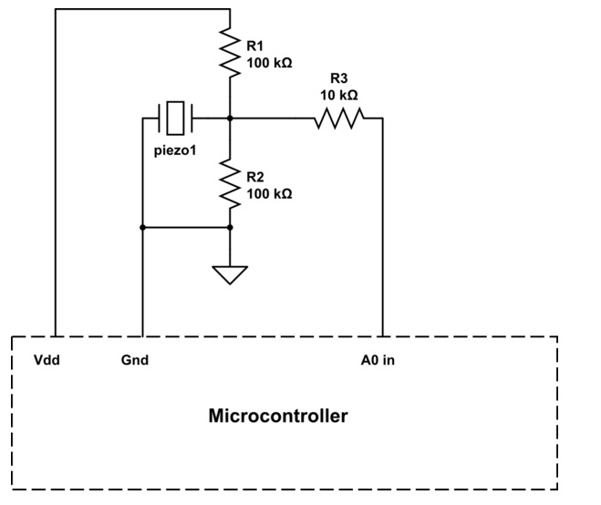
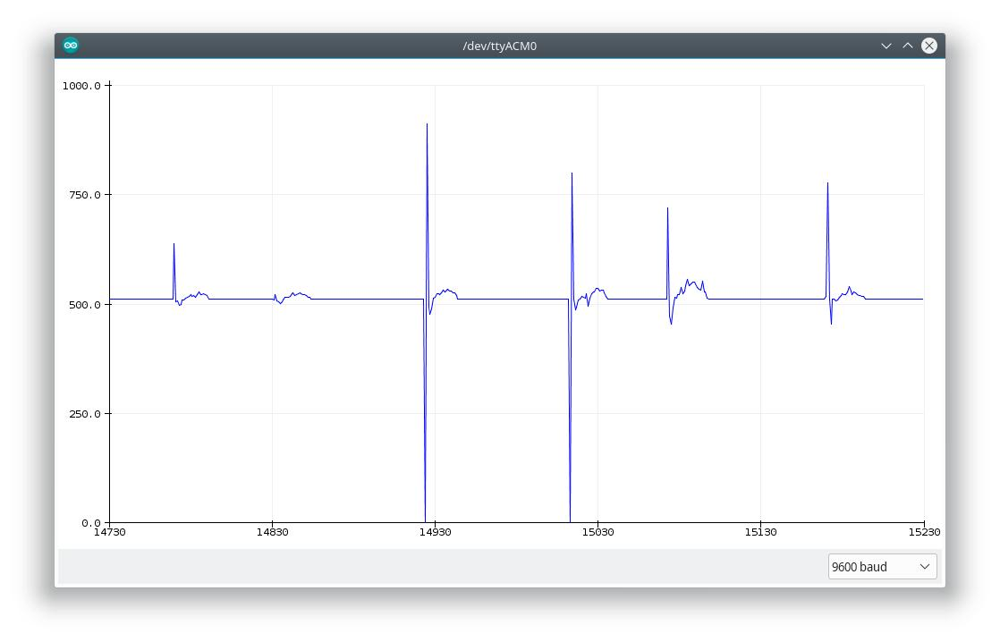
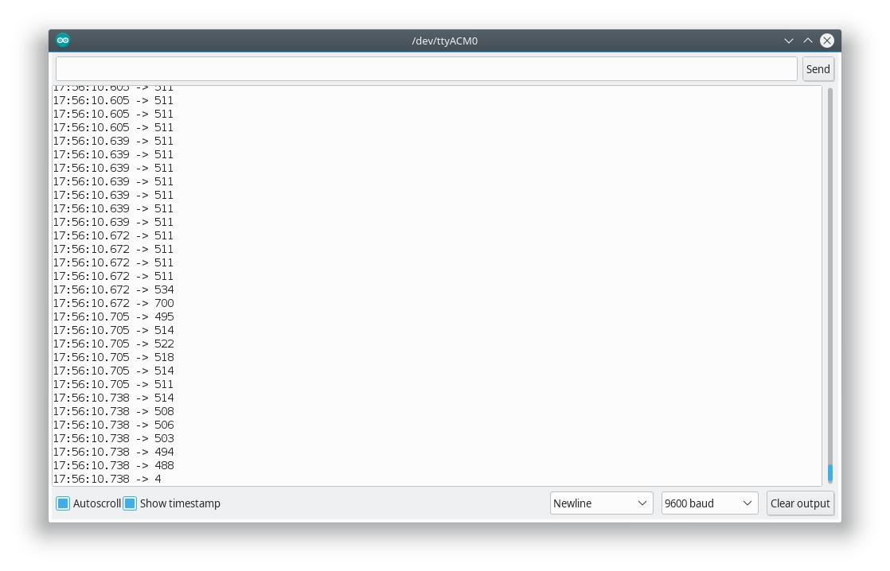

hier vom kleinen piezo. tut sich nicht viel! der unterschied ist glaube ich in den übertragenen frequenzbändern.
Arduino Tutorial: Knock - Circuit
Several Piezo contact mics with Arduino (StackOverflow)
Connecting Arduino to Processing


das Signal vom großen Piezo, wenn man direkt drauf rum drückt
hier vom kleinen piezo. tut sich nicht viel! der unterschied ist glaube ich in den übertragenen frequenzbändern.

sind jedenfalls genau die gleichen werte, die rauskommen. das liegt an der schaltung. klappt gut!
(2020-03-03)